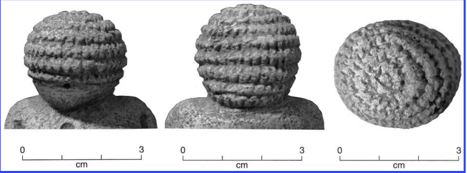

datos sobre los sombreros
El sombrero más antiguo De acuerdo con evidencia arqueológica, los sombreros más antiguos podrían haber surgido hace 27 mil años en la actual República Checa. Los arqueólogos dicen que han encontrado figuras de “Venus” que tienen peinados muy elaborados, los cuales podrían no ser peinados sino sombreros.
